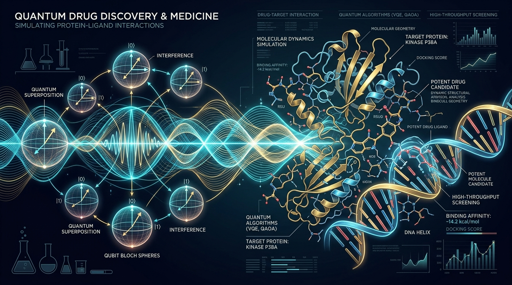

For decades, doctors and scientists have relied on faster and faster classical computers to read scans, sequence genomes and design drugs. But some medical problems are so complex that even the world's biggest supercomputers struggle with them. Enter quantum computing, a technology that processes information in a fundamentally different way, and one that healthcare is starting to take seriously.
What Is Quantum Computing, in Plain Words?
A classical computer stores information as bits, each either 0 or 1. A quantum computer uses qubits, which can exist in a blend of states at once (superposition) and can be linked to one another (entanglement). For certain kinds of problems, especially simulating nature at the molecular level, this lets a quantum machine explore possibilities in ways a classical computer cannot efficiently match.
This matters for medicine because the human body is, at its core, chemistry. Proteins, enzymes and drugs all interact according to the rules of quantum mechanics.
“The human body is, at its core, chemistry. Simulating nature at the atomic level requires computational architectures that speak the native language of quantum mechanics.”
Where Quantum Computing Could Help Medicine
1. Drug Discovery and Molecular Simulation
Finding a new drug means searching an almost endless space of possible molecules for ones that bind to a disease target and cause little harm. Today this takes years and billions of dollars. Quantum computers are naturally suited to simulating how molecules behave and interact, which could make early-stage drug design faster and more accurate.
This is already moving from theory to practice. The World Economic Forum's list of top emerging technologies for 2026 includes quantum simulation for drug discovery, citing work by IBM and Moderna on modelling mRNA structure and protein-folding problems. Pharmaceutical companies are building quantum-ready teams and testing hybrid quantum-classical algorithms on cloud-based quantum hardware.
2. Genomics and Personalized Medicine
A single human genome holds billions of data points, and understanding how genes, lifestyle and medicine interact is a huge computational challenge. Quantum algorithms may eventually help analyse genomic data faster and match patients with the treatments most likely to work for them, which is the promise of precision medicine.
3. Medical Imaging and Diagnostics
Quantum techniques could improve both how images are captured and how they are analysed. Researchers are exploring quantum machine learning for tasks like medical image classification and early disease detection, including cancer. Most progress so far involves hybrid models, where a small quantum component is plugged into a classical AI pipeline.
Quantum sensing is also worth watching. Unlike quantum computing itself, it is closer to real-world use and may be the first way quantum technology enters hospitals, for example through highly sensitive tools for early diagnostics.
4. Treatment Planning and Hospital Optimization
Many healthcare decisions are optimization problems: how to plan radiotherapy so it hits a tumour and spares healthy tissue, how to schedule operating rooms, or how to route resources across a hospital network. Quantum optimization algorithms are being studied for exactly these tasks.
5. Data Security
Quantum computing is a double-edged sword for healthcare. Powerful future quantum computers could break today's encryption, putting sensitive patient records at risk. At the same time, quantum-safe cryptography and quantum communication can help protect that data. Hospitals will need to plan for post-quantum security well before the threat arrives.
The Money and Momentum
Governments and funders are paying attention. The UK government announced a further commitment in March 2026 of £1 billion for large-scale quantum computers, plus over £500 million to help companies develop applications in areas including pharmaceuticals. The Wellcome Trust's Quantum for Bio programme has a $50 million portfolio focused on healthcare uses. Market research firms estimate the quantum healthcare market at roughly $470 million in 2026, though estimates vary by source and should be treated cautiously.
The Reality Check
It is important to stay honest about where things stand. Experts broadly agree that clear, practical quantum advantage in drug development is still in the future. The main hurdles are:
- Hardware limits: Today's machines are noisy and error-prone. Reliable medical use needs fault-tolerant quantum computers with strong error correction.
- Skills gap: Very few teams combine expertise in quantum algorithms, computational chemistry and drug design.
- Regulation: Existing frameworks such as FDA and CE medical-device rules were not built to assess quantum-enhanced tools.
- Evidence: Most medical applications are still at the research or prototype stage, and clinical studies are limited.
Quantum computing is not about replacing classical computers or AI. It is about helping with specific bottlenecks, such as molecular simulation, multi-omics analysis and optimization, where classical methods hit a wall.
Why Hybrid Computing Is the Bridge
Because fully fault-tolerant quantum computers do not exist yet, most real work today uses a hybrid approach. A classical computer handles the bulk of the job, such as data preparation and machine learning, and passes only the hardest sub-problem, like calculating the energy of a tricky molecule, to a quantum processor. The result then flows back into the classical pipeline.
This matters because it lets researchers learn how to use quantum tools now. Teams are building the algorithms, software and skills today, so that when better hardware arrives they can switch it on rather than start from zero. Cloud access has also lowered the barrier: a university lab or biotech start-up no longer needs to own a quantum machine to experiment with one.
What This Could Mean for Patients
It helps to picture the end result rather than the physics. In a quantum-assisted future, a patient with a hard-to-treat cancer might have their tumour genome analysed alongside millions of other cases, with the system suggesting which existing drugs are most likely to work. A rare-disease drug that would once have been abandoned as too costly to develop might become viable because simulations cut years from the early research. Radiotherapy plans might be tuned to the individual with far greater precision, and screening tools might catch disease signals long before symptoms appear.
None of this is available in clinics today, and it will arrive gradually, if at all in some cases. But these are the kinds of improvements researchers are aiming for.
Ethics, Access and Trust
New medical technology brings new responsibilities. Quantum-enhanced tools will depend on large amounts of sensitive patient data, so privacy and consent must be built in from the start. There is also a fairness question: if quantum-designed drugs and diagnostics are expensive, wealthy countries and hospitals may benefit first, widening existing health gaps. Regulators, doctors and technologists will need to agree on how such tools are tested, explained to patients and held accountable when they get things wrong.
There is also the risk of hype. Overpromising can erode public trust, waste research funding and push hospitals toward costly purchases they do not yet need. A realistic, evidence-first attitude serves patients better than excitement alone.
What Comes Next
In the near term, expect hybrid quantum-classical workflows, quantum sensing in diagnostics, and growing partnerships between hospitals, pharma companies and technology firms. Over the longer term, fault-tolerant machines could change how we discover drugs and personalize care.
For healthcare professionals, researchers and students, the best move today is to build awareness: follow the field, learn the basics, and prepare for both the opportunities and the security implications.
Conclusion
Quantum computing will not cure diseases overnight. But by letting us simulate the molecular world more faithfully, it could shorten the road from a promising idea to a real medicine. The technology is early, the hype is real, and so is the potential. Healthcare is right to start preparing now.
Sources: World Economic Forum Top 10 Emerging Technologies 2026 (via Meticulous Research); PHG Foundation on quantum computing in UK healthcare; Simmons & Simmons, June 2026; Frontiers in Medicine review on quantum computing in clinical care; BioSpectrum Asia on quantum diagnostics; Research and Markets healthcare quantum forecast, September 2026.